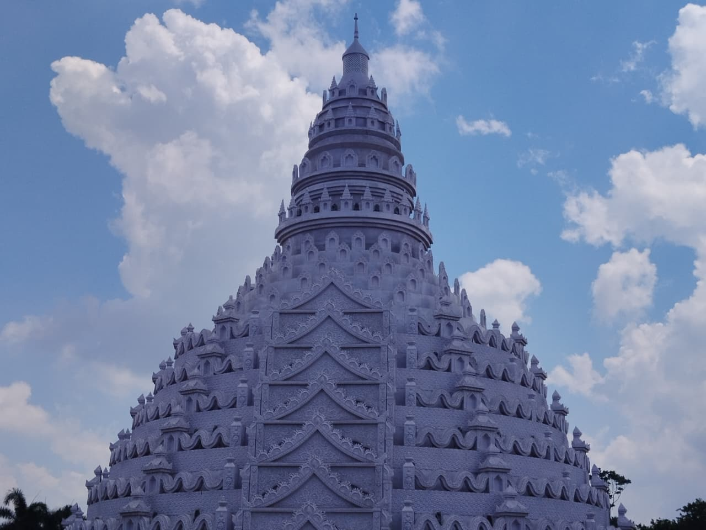
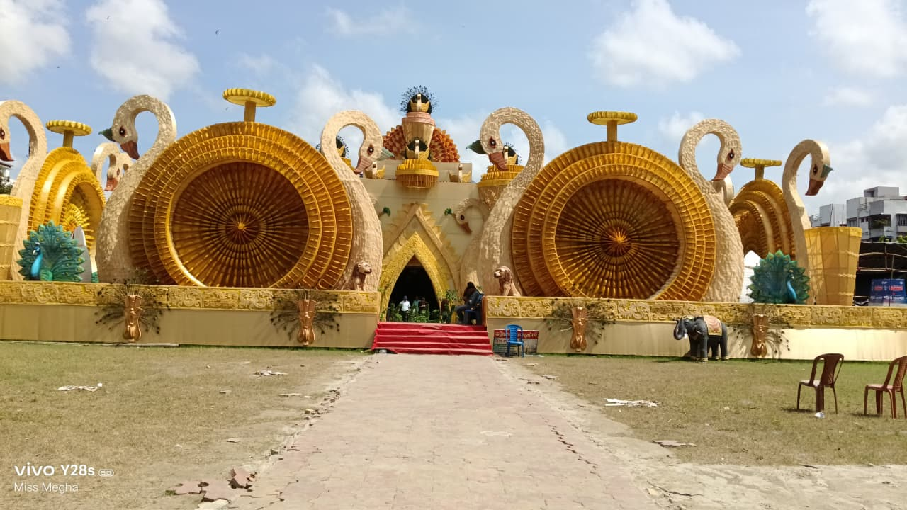
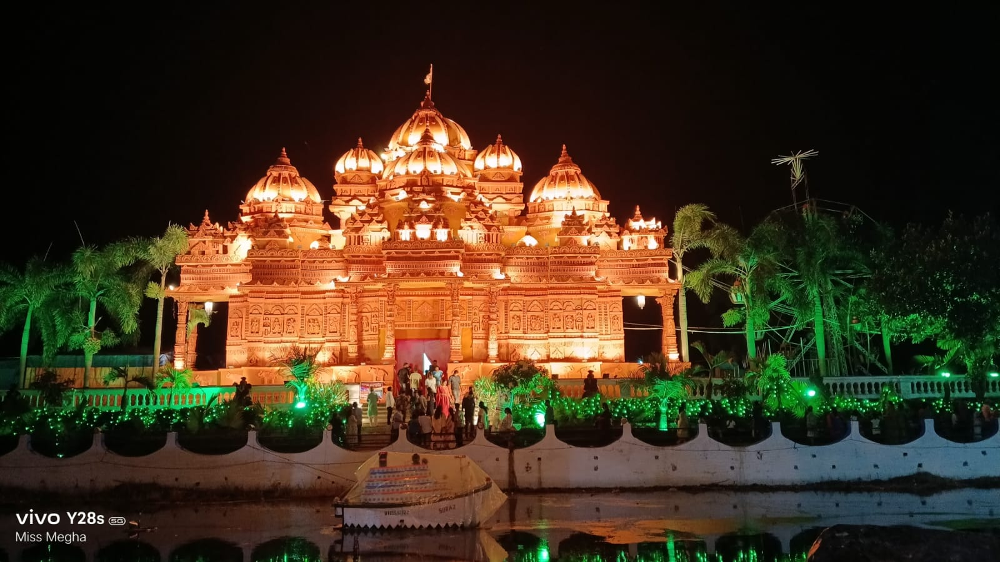
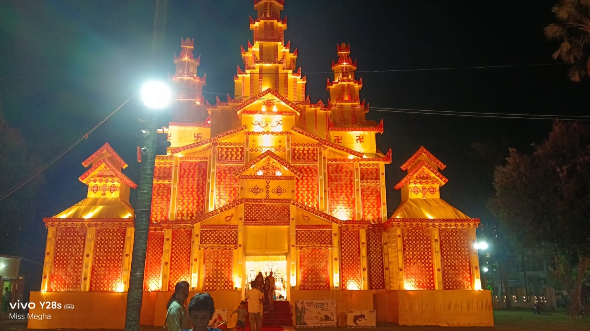
 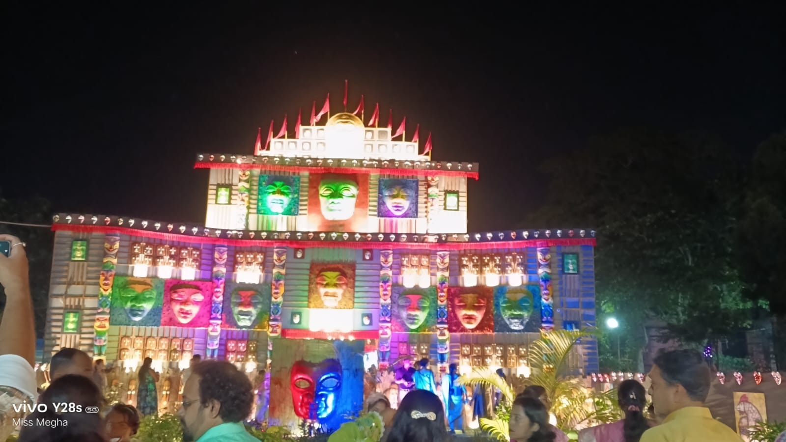
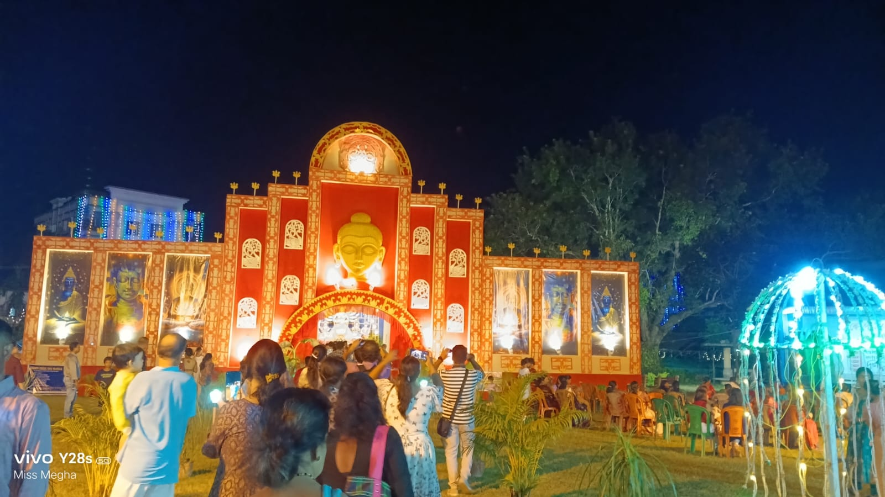
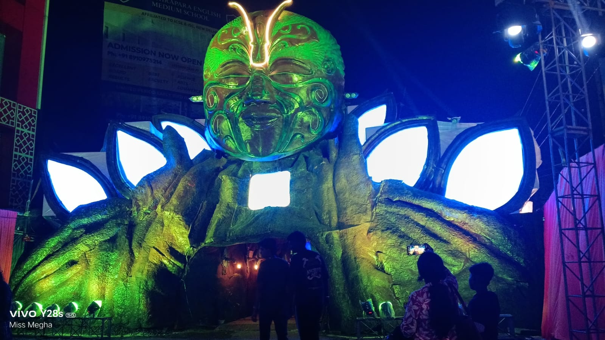
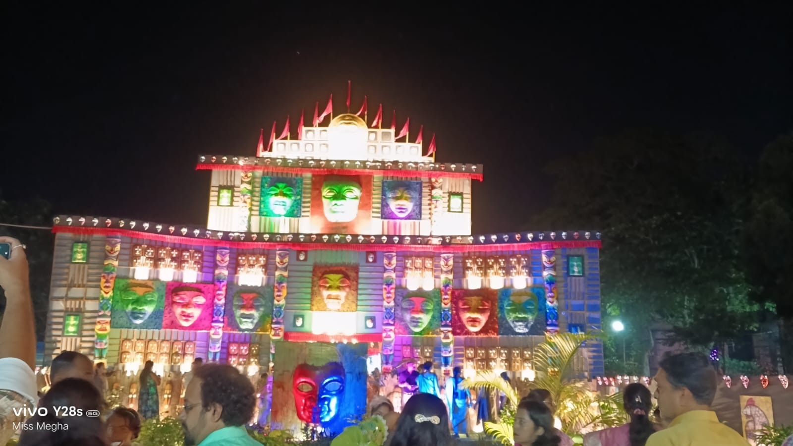
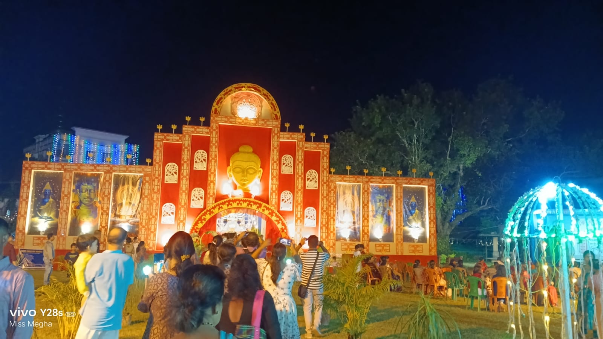
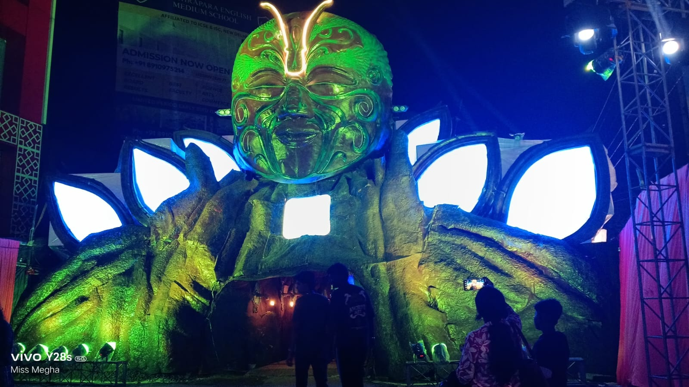
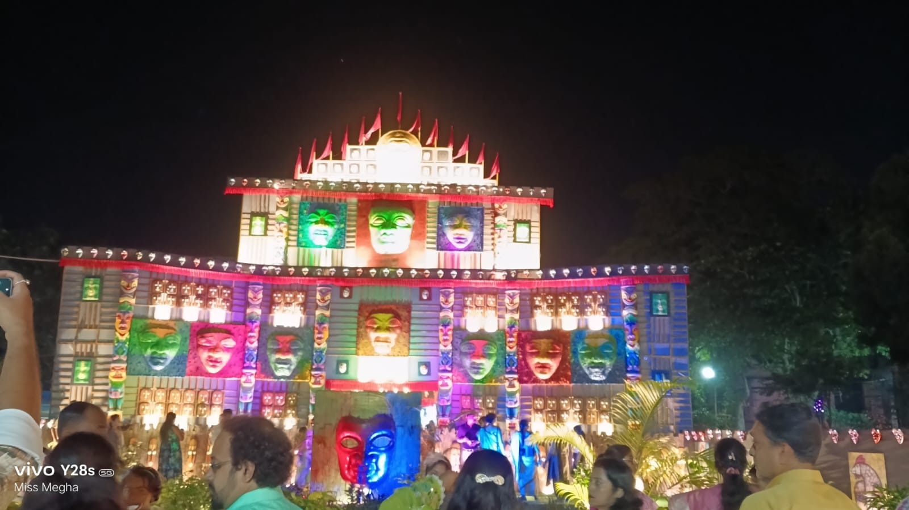
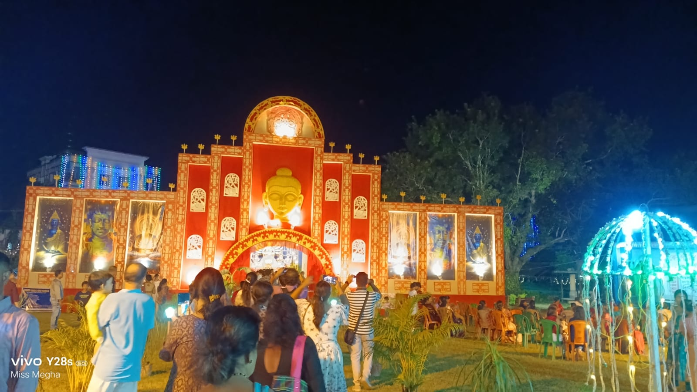
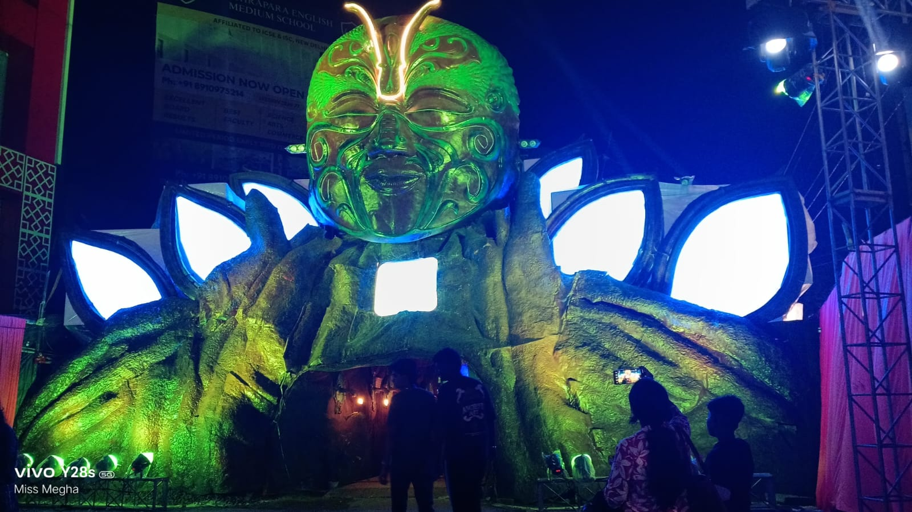
🌸কল্যাণীর দুর্গাপূজা🌸
✨কল্যাণী দুর্গাপূজা হলো একটি বিশেষ পূজা যেখানে দেবী দুর্গার মহিষাসুর বধের বিজয় উদযাপিত হয়। পশ্চিমবঙ্গের কল্যাণী শহরে প্রতি বছর এই উৎসব অনুষ্ঠিত হয় এবং এটি সকল ধর্ম-বর্ণের মানুষের জন্য এক আনন্দময় উৎসবে পরিণত হয়। এই সময় কল্যাণী জুড়ে বিভিন্ন মণ্ডপে দেবী দুর্গার প্রতিমা স্থাপন করে সকলে মিলে এই শারদীয় উৎসবের আনন্দ উপভোগ করে।✨
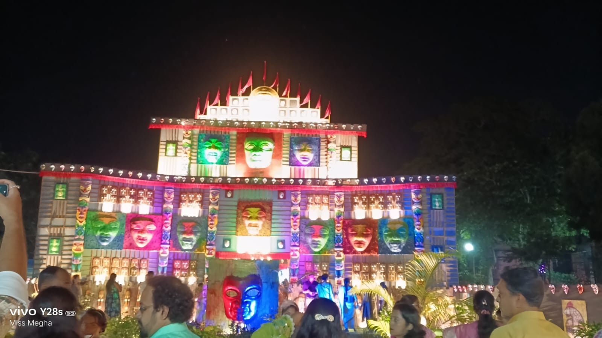
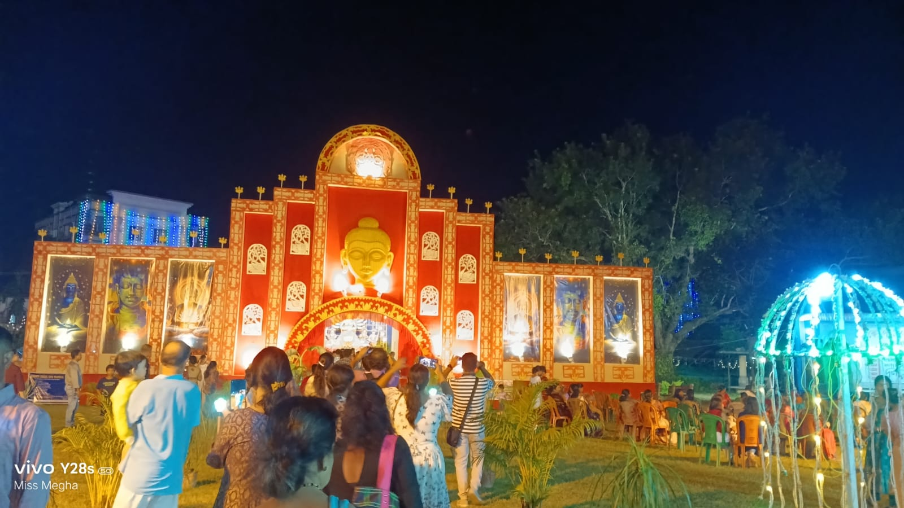
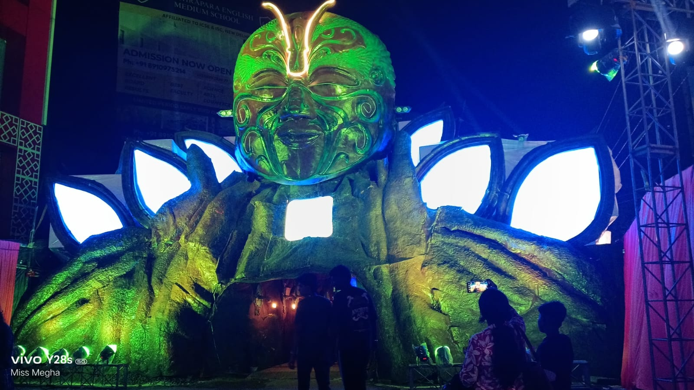
👉🏻কল্যাণীর প্রতিমা দেখার জন্য প্রতিমা লেখায় ক্লিক করুন অন্যথা Back প্রেস করুন